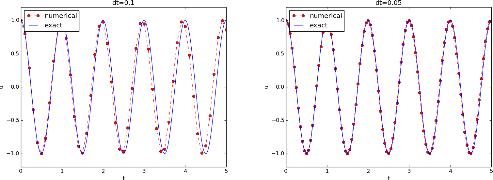

Figure 2: Exact discrete frequency and its second-order series expansion.

Much of the numerical challenges with computing oscillatory solutions in ODEs and PDEs can be captured by the very simple ODE \( u'' + u =0 \) and this is therefore the starting point for method development, implementation, and analysis.
A system that vibrates without damping and external forcing can be described by ODE problem $$ \begin{equation} u'' + \omega^2u = 0,\quad u(0)=I,\ u'(0)=0,\ t\in (0,T] \tp \tag{1} \end{equation} $$ Here, \( \omega \) and \( I \) are given constants. The exact solution of (1) is $$ \begin{equation} u(t) = I\cos (\omega t) \tp \tag{2} \end{equation} $$ That is, \( u \) oscillates with constant amplitude \( I \) and angular frequency \( \omega \). The corresponding period of oscillations (i.e., the time between two neighboring peaks in the cosine function) is \( P=2\pi/\omega \). The number of periods per second is \( f=\omega/(2\pi) \) and measured in the unit Hz. Both \( f \) and \( \omega \) are referred to as frequency, but \( \omega \) may be more precisely named angular frequency, measured in rad/s.
In vibrating mechanical systems modeled by (1), \( u(t) \) very often represents a position or a displacement of a particular point in the system. The derivative \( u'(t) \) then has the interpretation of the point's velocity, and \( u''(t) \) is the associated acceleration. The model (1) is not only applicable to vibrating mechanical systems, but also to oscillations in electrical circuits.
To formulate a finite difference method for the model problem (1) we follow the four steps in [1].
The domain is discretized by introducing a uniformly partitioned time mesh in the present problem. The points in the mesh are hence \( t_n=n\Delta t \), \( n=0,1,\ldots,N_t \), where \( \Delta t = T/N_t \) is the constant length of the time steps. We introduce a mesh function \( u^n \) for \( n=0,1,\ldots,N_t \), which approximates the exact solution at the mesh points. The mesh function will be computed from algebraic equations derived from the differential equation problem.
The ODE is to be satisfied at each mesh point: $$ \begin{equation} u''(t_n) + \omega^2u(t_n) = 0,\quad n=1,\ldots,N_t \tp \tag{3} \end{equation} $$
The derivative \( u''(t_n) \) is to be replaced by a finite difference approximation. A common second-order accurate approximation to the second-order derivative is $$ \begin{equation} u''(t_n) \approx \frac{u^{n+1}-2u^n + u^{n-1}}{\Delta t^2} \tp \tag{4} \end{equation} $$ Inserting (4) in (3) yields $$ \begin{equation} \frac{u^{n+1}-2u^n + u^{n-1}}{\Delta t^2} = -\omega^2 u^n \tp \tag{5} \end{equation} $$
We also need to replace the derivative in the initial condition by a finite difference. Here we choose a centered difference, whose accuracy is similar to the centered difference we used for \( u'' \): $$ \begin{equation} \frac{u^1-u^{-1}}{2\Delta t} = 0 \tag{6} \tp \end{equation} $$
To formulate the computational algorithm, we assume that we have already computed \( u^{n-1} \) and \( u^n \) such that \( u^{n+1} \) is the unknown value, which we can readily solve for: $$ \begin{equation} u^{n+1} = 2u^n - u^{n-1} - \Delta t^2\omega^2 u^n \tp \tag{7} \end{equation} $$ The computational algorithm is simply to apply (7) successively for \( n=1,2,\ldots,N_t-1 \). This numerical scheme sometimes goes under the name Stormer's method or Verlet integration.
We observe that (7) cannot be used for \( n=0 \) since the computation of \( u^1 \) then involves the undefined value \( u^{-1} \) at \( t=-\Delta t \). The discretization of the initial condition then come to rescue: (6) implies \( u^{-1} = u^1 \) and this relation can be combined with (7) for \( n=1 \) to yield a value for \( u^1 \): $$ \begin{equation*} u^1 = 2u^0 - u^{1} - \Delta t^2 \omega^2 u^0,\end{equation*} $$ which reduces to $$ \begin{equation} u^1 = u^0 - \half \Delta t^2 \omega^2 u^0 \tp \tag{8} \end{equation} $$ Exercise 5: Use a Taylor polynomial to compute \( u^1 \) asks you to perform an alternative derivation and also to generalize the initial condition to \( u'(0)=V\neq 0 \).
The steps for solving (1) becomes
The algorithm is more precisely expressed directly in Python:
t = linspace(0, T, Nt+1) # mesh points in time
dt = t[1] - t[0] # constant time step
u = zeros(Nt+1) # solution
u[0] = I
u[1] = u[0] - 0.5*dt**2*w**2*u[0]
for n in range(1, Nt):
u[n+1] = 2*u[n] - u[n-1] - dt**2*w**2*u[n]
In the code, we use w as the symbol for \( \omega \).
The reason is that this author prefers w for readability
and comparison with the mathematical \( \omega \) instead of
the full word omega as variable name.
We may write the scheme using the compact difference notation (see examples in [1]). The difference (4) has the operator notation \( [D_tD_t u]^n \) such that we can write: $$ \begin{equation} [D_tD_t u + \omega^2 u = 0]^n \tp \tag{9} \end{equation} $$ Note that \( [D_tD_t u]^n \) means applying a central difference with step \( \Delta t/2 \) twice: $$ [D_t(D_t u)]^n = \frac{[D_t u]^{n+\half} - [D_t u]^{n-\half}}{\Delta t}$$ which is written out as $$ \frac{1}{\Delta t}\left(\frac{u^{n+1}-u^n}{\Delta t} - \frac{u^{n}-u^{n-1}}{\Delta t}\right) = \frac{u^{n+1}-2u^n + u^{n-1}}{\Delta t^2} \tp $$
The discretization of initial conditions can in the operator notation be expressed as $$ \begin{equation} [u = I]^0,\quad [D_{2t} u = 0]^0, \end{equation} $$ where the operator \( [D_{2t} u]^n \) is defined as $$ \begin{equation} [D_{2t} u]^n = \frac{u^{n+1} - u^{n-1}}{2\Delta t} \tp \end{equation} $$
The algorithm from the previous section is readily translated to a complete Python function for computing (returning) \( u^0,u^1,\ldots,u^{N_t} \) and \( t_0,t_1,\ldots,t_{N_t} \), given the input \( I \), \( \omega \), \( \Delta t \), and \( T \):
from numpy import *
from matplotlib.pyplot import *
from vib_empirical_analysis import minmax, periods, amplitudes
def solver(I, w, dt, T):
"""
Solve u'' + w**2*u = 0 for t in (0,T], u(0)=I and u'(0)=0,
by a central finite difference method with time step dt.
"""
dt = float(dt)
Nt = int(round(T/dt))
u = zeros(Nt+1)
t = linspace(0, Nt*dt, Nt+1)
u[0] = I
u[1] = u[0] - 0.5*dt**2*w**2*u[0]
for n in range(1, Nt):
u[n+1] = 2*u[n] - u[n-1] - dt**2*w**2*u[n]
return u, t
A function for plotting the numerical and the exact solution is also convenient to have:
def u_exact(t, I, w):
return I*cos(w*t)
def visualize(u, t, I, w):
plot(t, u, 'r--o')
t_fine = linspace(0, t[-1], 1001) # very fine mesh for u_e
u_e = u_exact(t_fine, I, w)
hold('on')
plot(t_fine, u_e, 'b-')
legend(['numerical', 'exact'], loc='upper left')
xlabel('t')
ylabel('u')
dt = t[1] - t[0]
title('dt=%g' % dt)
umin = 1.2*u.min(); umax = -umin
axis([t[0], t[-1], umin, umax])
savefig('vib1.png')
savefig('vib1.pdf')
savefig('vib1.eps')
A corresponding main program calling these functions for a simulation
of a given number of periods (num_periods) may take the form
I = 1
w = 2*pi
dt = 0.05
num_periods = 5
P = 2*pi/w # one period
T = P*num_periods
u, t = solver(I, w, dt, T)
visualize(u, t, I, w, dt)
Adjusting some of the input parameters on the command line can be
handy. Here is a code segment using the ArgumentParser tool in
the argparse module to define option value (--option value)
pairs on the command line:
import argparse
parser = argparse.ArgumentParser()
parser.add_argument('--I', type=float, default=1.0)
parser.add_argument('--w', type=float, default=2*pi)
parser.add_argument('--dt', type=float, default=0.05)
parser.add_argument('--num_periods', type=int, default=5)
a = parser.parse_args()
I, w, dt, num_periods = a.I, a.w, a.dt, a.num_periods
A typical execution goes like
Terminal> python vib_undamped.py --num_periods 20 --dt 0.1
In mechanical vibration applications one is often interested in computing the velocity \( v(t)=u'(t) \) after \( u(t) \) has been computed. This can be done by a central difference, $$ \begin{equation} v(t_n)=u'(t_n) \approx v^n = \frac{u^{n+1}-u^{n-1}}{2\Delta t} = [D_{2t}u]^n \tp \end{equation} $$ This formula applies for all inner mesh points, \( n=1,\ldots,N_t-1 \). For \( n=0 \) we have that \( v(0) \) is given by the initial condition on \( u'(0) \), and for \( n=N_t \) we can use a one-sided, backward difference: \( v^n=[D_t^-u]^n \).
Appropriate vectorized Python code becomes
v = np.zeros_like(u)
v[1:-1] = (u[2:] - u[:-2])/(2*dt) # internal mesh points
v[0] = V # Given boundary condition u'(0)
v[-1] = (u[-1] - u[-2])/dt # backward difference
The simplest type of verification, which is also instructive for understanding
the algorithm, is to compute \( u^1 \), \( u^2 \), and \( u^3 \)
with the aid of a calculator
and make a function for comparing these results with those from the solver
function. We refer to the test_three_steps function in
the file vib_undamped.py
for details.
Constructing test problems where the exact solution is constant or linear helps initial debugging and verification as one expects any reasonable numerical method to reproduce such solutions to machine precision. Second-order accurate methods will often also reproduce a quadratic solution. Here \( [D_tD_tt^2]^n=2 \), which is the exact result. A solution \( u=t^2 \) leads to \( u''+\omega^2 u=2 + (\omega t)^2\neq 0 \). We must therefore add a source in the equation: \( u'' + \omega^2 u = f \) to allow a solution \( u=t^2 \) for \( f=(\omega t)^2 \). By simple insertion we can show that the mesh function \( u^n = t_n^2 \) is also a solution of the discrete equations. Problem 1: Use linear/quadratic functions for verification asks you to carry out all details with showing that linear and quadratic solutions are solutions of the discrete equations. Such results are very useful for debugging and verification.
Empirical computation of convergence rates, as explained for a simple ODE model, yields a good method for verification. The function below
def convergence_rates(m, solver_function, num_periods=8):
"""
Return m-1 empirical estimates of the convergence rate
based on m simulations, where the time step is halved
for each simulation.
"""
w = 0.35; I = 0.3
dt = 2*pi/w/30 # 30 time step per period 2*pi/w
T = 2*pi/w*num_periods
dt_values = []
E_values = []
for i in range(m):
u, t = solver_function(I, w, dt, T)
u_e = u_exact(t, I, w)
E = sqrt(dt*sum((u_e-u)**2))
dt_values.append(dt)
E_values.append(E)
dt = dt/2
r = [log(E_values[i-1]/E_values[i])/
log(dt_values[i-1]/dt_values[i])
for i in range(1, m, 1)]
return r
The returned r list has its values equal to 2.00, which is in
excellent agreement with what is expected from the second-order finite
difference approximation \( [D_tD_tu]^n \) and other theoretical measures
of the error in the numerical method. The final r[-1] value is a
good candidate for a unit test:
def test_convergence_rates():
r = convergence_rates(m=5, solver_function=solver, num_periods=8)
# Accept rate to 1 decimal place
nt.assert_almost_equal(r[-1], 2.0, places=1)
The complete code appears in the file vib_undamped.py.
Figure 1 shows a comparison of the exact and numerical solution for \( \Delta t=0.1, 0.05 \) and \( w=2\pi \). From the plot we make the following observations:

In vibration problems it is often of interest to investigate the system's
behavior over long time intervals. Errors in the phase may then show
up as crucial. Let us investigate long
time series by introducing a moving plot window that can move along with
the \( p \) most recently computed periods of the solution. The
SciTools package contains
a convenient tool for this: MovingPlotWindow. Typing
pydoc scitools.MovingPlotWindow shows a demo and description of usage.
The function below illustrates the usage and is invoked in the
vib_undamped.py code if the number of periods in the simulation exceeds
10:
def visualize_front(u, t, I, w, savefig=False):
"""
Visualize u and the exact solution vs t, using a
moving plot window and continuous drawing of the
curves as they evolve in time.
Makes it easy to plot very long time series.
"""
import scitools.std as st
from scitools.MovingPlotWindow import MovingPlotWindow
P = 2*pi/w # one period
umin = 1.2*u.min(); umax = -umin
plot_manager = MovingPlotWindow(
window_width=8*P,
dt=t[1]-t[0],
yaxis=[umin, umax],
mode='continuous drawing')
for n in range(1,len(u)):
if plot_manager.plot(n):
s = plot_manager.first_index_in_plot
st.plot(t[s:n+1], u[s:n+1], 'r-1',
t[s:n+1], I*cos(w*t)[s:n+1], 'b-1',
title='t=%6.3f' % t[n],
axis=plot_manager.axis(),
show=not savefig) # drop window if savefig
if savefig:
filename = 'tmp_vib%04d.png' % n
st.savefig(filename)
print 'making plot file', filename, 'at t=%g' % t[n]
plot_manager.update(n)
Running
Terminal> python vib_undamped.py --dt 0.05 --num_periods 40
makes the simulation last for 40 periods of the cosine function.
With the moving plot window we can follow the numerical and exact
solution as time progresses, and we see from this demo that
the phase error is small in the beginning, but then becomes more
prominent with time. Running vib_undamped.py with \( \Delta t=0.1 \)
clearly shows that the phase errors become significant even earlier
in the time series and destroys the solution.
The visualize_front function stores all the plots in
files whose names are numbered:
tmp_vib0000.png, tmp_vib0001.png, tmp_vib0002.png,
and so on. From these files we may make a movie. The Flash
format is popular,
Terminal> avconv -r 12 -i tmp_vib%04d.png -c:v flv movie.flv
The avconv program can be replaced by the ffmpeg program in
the above command if desired. The -r option should come first and
describes the number of frames per second in the movie. The
-i option describes the name of the plot files.
Other formats can be generated by changing the video codec
and equipping the video file with the right extension:
| Format | Codec and filename |
|---|---|
| Flash | -c:v flv movie.flv |
| MP4 | -c:v libx264 movie.mp4 |
| Webm | -c:v libvpx movie.webm |
| Ogg | -c:v libtheora movie.ogg |
The video file can be played by some video player like vlc, mplayer,
gxine, or totem, e.g.,
Terminal> vlc movie.webm
A web page can also be used to play the movie. Today's standard is
to use the HTML5 video tag:
<video autoplay loop controls
width='640' height='365' preload='none'>
<source src='movie.webm' type='video/webm; codecs="vp8, vorbis"'>
</video>
To ensure that the individual plot frames are shown in correct order,
it is important to number the files with zero-padded numbers
(0000, 0001, 0002, etc.). The printf format %04d specifies an
integer in a field of width 4, padded with zeros from the left.
A simple Unix wildcard file specification like tmp_vib*.png
will then list the frames in the right order. If the numbers in the
filenames were not zero-padded, the frame tmp_vib11.png would appear
before tmp_vib2.png in the movie.
Plotting functions vertically, line by line, in the terminal window
using ascii characters only is a simple, fast, and convenient
visualization technique for long time series (the time arrow points
downward). The tool
scitools.avplotter.Plotter makes it easy to create such plots:
def visualize_front_ascii(u, t, I, w, fps=10):
"""
Plot u and the exact solution vs t line by line in a
terminal window (only using ascii characters).
Makes it easy to plot very long time series.
"""
from scitools.avplotter import Plotter
import time
P = 2*pi/w
umin = 1.2*u.min(); umax = -umin
p = Plotter(ymin=umin, ymax=umax, width=60, symbols='+o')
for n in range(len(u)):
print p.plot(t[n], u[n], I*cos(w*t[n])), \
'%.1f' % (t[n]/P)
time.sleep(1/float(fps))
if __name__ == '__main__':
main()
raw_input()
The call p.plot returns a line of text, with the \( t \) axis marked and
a symbol + for the first function (u) and o for the second
function (the exact solution). Here we append this text
a time counter reflecting how many periods the current time point
corresponds to. A typical output (\( \omega =2\pi \), \( \Delta t=0.05 \))
looks like this:
| o+ 14.0
| + o 14.0
| + o 14.1
| + o 14.1
| + o 14.2
+| o 14.2
+ | 14.2
+ o | 14.3
+ o | 14.4
+ o | 14.4
+o | 14.5
o + | 14.5
o + | 14.6
o + | 14.6
o + | 14.7
o | + 14.7
| + 14.8
| o + 14.8
| o + 14.9
| o + 14.9
| o+ 15.0
For oscillating functions like those in Figure 1 we may compute the amplitude and frequency (or period) empirically. That is, we run through the discrete solution points \( (t_n, u_n) \) and find all maxima and minima points. The distance between two consecutive maxima (or minima) points can be used as estimate of the local period, while half the difference between the \( u \) value at a maximum and a nearby minimum gives an estimate of the local amplitude.
The local maxima are the points where $$ \begin{equation} u^{n-1} < u^n > u^{n+1},\quad n=1,\ldots,N_t-1, \end{equation} $$ and the local minima are recognized by $$ \begin{equation} u^{n-1} > u^n < u^{n+1},\quad n=1,\ldots,N_t-1 \tp \end{equation} $$ In computer code this becomes
def minmax(t, u):
minima = []; maxima = []
for n in range(1, len(u)-1, 1):
if u[n-1] > u[n] < u[n+1]:
minima.append((t[n], u[n]))
if u[n-1] < u[n] > u[n+1]:
maxima.append((t[n], u[n]))
return minima, maxima
Note that the returned objects are list of tuples.
Let \( (t_i, e_i) \), \( i=0,\ldots,M-1 \), be the sequence of all the \( M \) maxima points, where \( t_i \) is the time value and \( e_i \) the corresponding \( u \) value. The local period can be defined as \( p_i=t_{i+1}-t_i \). With Python syntax this reads
def periods(maxima):
p = [extrema[n][0] - maxima[n-1][0]
for n in range(1, len(maxima))]
return np.array(p)
The list p created by a list comprehension is converted to an array
since we probably want to compute with it, e.g., find the corresponding
frequencies 2*pi/p.
Having the minima and the maxima, the local amplitude can be calculated as the difference between two neighboring minimum and maximum points:
def amplitudes(minima, maxima):
a = [(abs(maxima[n][1] - minima[n][1]))/2.0
for n in range(min(len(minima),len(maxima)))]
return np.array(a)
The code segments are found in the file vib_empirical_analysis.py.
Visualization of the periods p or the amplitudes a
it is most conveniently done with just a counter
on the horizontal axis, since a[i] and p[i] correspond to
the \( i \)-th amplitude estimate and the \( i \)-th period estimate, respectively.
There is no unique time point associated with either of these estimate
since values at two different time points were used in the
computations.
In the analysis of very long time series, it is advantageous to
compute and plot p and a instead of \( u \) to get an impression of
the development of the oscillations.
After having seen the phase error grow with time in the previous section, we shall now quantify this error through mathematical analysis. The key tool in the analysis will be to establish an exact solution of the discrete equations. The difference equation (7) has constant coefficients and is homogeneous. The solution is then \( u^n=CA^n \), where \( A \) is some number to be determined from the differential equation and \( C \) is determined from the initial condition (\( C=I \)). Recall that \( n \) in \( u^n \) is a superscript labeling the time level, while \( n \) in \( A^n \) is an exponent. With oscillating functions as solutions, the algebra will be considerably simplified if we seek an \( A \) on the form $$ A=e^{i\tilde\omega \Delta t},$$ and solve for the numerical frequency \( \tilde\omega \) rather than \( A \). Note that \( i=\sqrt{-1} \) is the imaginary unit. (Using a complex exponential function gives simpler arithmetics than working with a sine or cosine function.) We have $$ A^n = e^{i\tilde\omega \Delta t\, n}=e^{i\tilde\omega t} = \cos (\tilde\omega t) + i\sin(\tilde \omega t) \tp $$ The physically relevant numerical solution can be taken as the real part of this complex expression.
The calculations goes as
$$
\begin{align*}
[D_tD_t u]^n &= \frac{u^{n+1} - 2u^n + u^{n-1}}{\Delta t^2}\\
&= I\frac{A^{n+1} - 2A^n + A^{n-1}}{\Delta t^2}\\
&= I\frac{\exp{(i\tilde\omega(t+\Delta t))} - 2\exp{(i\tilde\omega t)} + \exp{(i\tilde\omega(t-\Delta t))}}{\Delta t^2}\\
&= I\exp{(i\tilde\omega t)}\frac{1}{\Delta t^2}\left(\exp{(i\tilde\omega(\Delta t))} + \exp{(i\tilde\omega(-\Delta t))} - 2\right)\\
&= I\exp{(i\tilde\omega t)}\frac{2}{\Delta t^2}\left(\cosh(i\tilde\omega\Delta t) -1 \right)\\
&= I\exp{(i\tilde\omega t)}\frac{2}{\Delta t^2}\left(\cos(\tilde\omega\Delta t) -1 \right)\\
&= -I\exp{(i\tilde\omega t)}\frac{4}{\Delta t^2}\sin^2(\frac{\tilde\omega\Delta t}{2})
\end{align*}
$$
The last line follows from the relation
\( \cos x - 1 = -2\sin^2(x/2) \) (try cos(x)-1 in
wolframalpha.com to see the formula).
The scheme (7) with \( u^n=Ie^{i\omega\tilde\Delta t\, n} \) inserted now gives $$ \begin{equation} -Ie^{i\tilde\omega t}\frac{4}{\Delta t^2}\sin^2(\frac{\tilde\omega\Delta t}{2}) + \omega^2 Ie^{i\tilde\omega t} = 0, \end{equation} $$ which after dividing by \( Ie^{i\tilde\omega t} \) results in $$ \begin{equation} \frac{4}{\Delta t^2}\sin^2(\frac{\tilde\omega\Delta t}{2}) = \omega^2 \tp \end{equation} $$ The first step in solving for the unknown \( \tilde\omega \) is $$ \sin^2(\frac{\tilde\omega\Delta t}{2}) = \left(\frac{\omega\Delta t}{2}\right)^2 \tp $$ Then, taking the square root, applying the inverse sine function, and multiplying by \( 2/\Delta t \), results in $$ \begin{equation} \tilde\omega = \pm \frac{2}{\Delta t}\sin^{-1}\left(\frac{\omega\Delta t}{2}\right) \tp \tag{10} \end{equation} $$
The first observation of (10) tells that there is a phase error since the numerical frequency \( \tilde\omega \) never equals the exact frequency \( \omega \). But how good is the approximation (10)? That is, what is the error \( \omega - \tilde\omega \) or \( \tilde\omega/\omega \)? Taylor series expansion for small \( \Delta t \) may give an expression that is easier to understand than the complicated function in (10):
>>> from sympy import *
>>> dt, w = symbols('dt w')
>>> w_tilde_e = 2/dt*asin(w*dt/2)
>>> w_tilde_series = w_tilde_e.series(dt, 0, 4)
>>> print w_tilde_series
w + dt**2*w**3/24 + O(dt**4)
This means that
$$ \begin{equation} \tilde\omega = \omega\left( 1 + \frac{1}{24}\omega^2\Delta t^2\right) + \Oof{\Delta t^4} \tp \tag{11} \end{equation} $$ The error in the numerical frequency is of second-order in \( \Delta t \), and the error vanishes as \( \Delta t\rightarrow 0 \). We see that \( \tilde\omega > \omega \) since the term \( \omega^3\Delta t^2/24 >0 \) and this is by far the biggest term in the series expansion for small \( \omega\Delta t \). A numerical frequency that is too large gives an oscillating curve that oscillates too fast and therefore "lags behind" the exact oscillations, a feature that can be seen in the plots.
Figure 2 plots the discrete frequency (10) and its approximation (11) for \( \omega =1 \) (based on the program vib_plot_freq.py). Although \( \tilde\omega \) is a function of \( \Delta t \) in (11), it is misleading to think of \( \Delta t \) as the important discretization parameter. It is the product \( \omega\Delta t \) that is the key discretization parameter. This quantity reflects the number of time steps per period of the oscillations. To see this, we set \( P=N_P\Delta t \), where \( P \) is the length of a period, and \( N_P \) is the number of time steps during a period. Since \( P \) and \( \omega \) are related by \( P=2\pi/\omega \), we get that \( \omega\Delta t = 2\pi/N_P \), which shows that \( \omega\Delta t \) is directly related to \( N_P \).
The plot shows that at least \( N_P\sim 25-30 \) points per period are necessary for reasonable accuracy, but this depends on the length of the simulation (\( T \)) as the total phase error due to the frequency error grows linearly with time (see Exercise 2: Show linear growth of the phase with time).
Figure 2: Exact discrete frequency and its second-order series expansion.
Perhaps more important than the \( \tilde\omega = \omega + {\cal O}(\Delta t^2) \)
result found above is the fact that we have an exact discrete solution of
the problem:
$$
\begin{equation}
u^n = I\cos\left(\tilde\omega n\Delta t\right),\quad
\tilde\omega = \frac{2}{\Delta t}\sin^{-1}\left(\frac{\omega\Delta t}{2}\right)
\tp
\tag{12}
\end{equation}
$$
We can then compute the error mesh function
$$
\begin{equation}
e^n = \uex(t_n) - u^n =
I\cos\left(\omega n\Delta t\right) - I\cos\left(\tilde\omega n\Delta t\right)\tp
\tag{13}
\end{equation}
$$
In particular, we can use this expression to show convergence of the
numerical scheme, i.e., \( e^n\rightarrow 0 \) as \( \Delta t\rightarrow 0 \).
We have that
$$
\lim_{\Delta t\rightarrow 0}
\tilde\omega = \lim_{\Delta t\rightarrow 0}
\frac{2}{\Delta t}\sin^{-1}\left(\frac{\omega\Delta t}{2}\right)
= \omega,
$$
by L'Hopital's rule or simply asking
(2/x)*asin(w*x/2) as x->0 in WolframAlpha.
Therefore, \( \tilde\omega\rightarrow\omega \), and the two terms in
\( e^n \) cancel each other in the limit \( \Delta t\rightarrow 0 \).
The error mesh function is ideal for verification purposes and you are strongly encouraged to make a test based on (12) by doing Exercise 10: Use an exact discrete solution for verification.
To achieve more analytical insight into the nature of the global error, we can Taylor expand the error mesh function. Since \( \tilde\omega \) contains \( \Delta t \) in the denominator we use the series expansion for \( \tilde\omega \) inside the cosine function:
>>> dt, w, t = symbols('dt w t')
>>> w_tilde_e = 2/dt*asin(w*dt/2)
>>> w_tilde_series = w_tilde_e.series(dt, 0, 4)
>>> # Get rid of O() term
>>> w_tilde_series = sum(w_tilde_series.as_ordered_terms()[:-1])
>>> w_tilde_series
dt**2*w**3/24 + w
>>> error = cos(w*t) - cos(w_tilde_series*t)
>>> error.series(dt, 0, 6)
dt**2*t*w**3*sin(t*w)/24 + dt**4*t**2*w**6*cos(t*w)/1152 + O(dt**6)
>>> error.series(dt, 0, 6).as_leading_term(dt)
dt**2*t*w**3*sin(t*w)/24
This means that the leading order global (true) error at a point \( t \) is proportional to \( \omega^3t\Delta t^2 \). Setting \( t=n\Delta t \) and replacing \( \sin(\omega t) \) by its maximum value 1, we have the analytical leading-order expression $$ e^n = \frac{1}{24}n\omega^3\Delta t^3,$$ and the \( \ell^2 \) norm of this error can be computed as $$ ||e^n||_{\ell^2}^2 = \Delta t\sum_{n=0}^{N_t} \frac{1}{24^2}n^2\omega^6\Delta t^6 =\frac{1}{24^2}\omega^6\Delta t^7 \sum_{n=0}^{N_t} n^2\tp$$ The sum \( \sum_{n=0}^{N_t} n^2 \) is approximately equal to \( \frac{1}{3}N_t^3 \). Replacing \( N_t \) by \( T/\Delta t \) and taking the square root gives the expression $$ ||e^n||_{\ell^2} = \frac{1}{24}\sqrt{\frac{T^3}{3}}\omega^3\Delta t^2,$$ which shows that also the integrated error is proportional to \( \Delta t^2 \).
Looking at (12), it appears that the numerical solution has constant and correct amplitude, but an error in the frequency (phase error). However, there is another error that is more serious, namely an unstable growing amplitude that can occur of \( \Delta t \) is too large.
We realize that
a constant amplitude demands
\( \tilde\omega \) to be a real number. A complex \( \tilde\omega \) is
indeed possible if the argument \( x \) of \( \sin^{-1}(x) \) has magnitude
larger than unity: \( |x|>1 \) (type asin(x) in wolframalpha.com to see basic properties of \( \sin^{-1} (x) \)).
A complex \( \tilde\omega \) can be written \( \tilde\omega = \tilde\omega_r +
i\tilde\omega_i \). Since \( \sin^{-1}(x) \) has a negative imaginary part for
\( x>1 \), \( \tilde\omega_i < 0 \), it means that
\( \exp{(i\omega\tilde t)}=\exp{(-\tilde\omega_i t)}\exp{(i\tilde\omega_r t)} \)
will lead to exponential growth in time because
\( \exp{(-\tilde\omega_i t)} \) with \( \tilde\omega_i < 0 \) has a positive
exponent.
We do not tolerate growth in the amplitude and we therefore have a stability criterion arising from requiring the argument \( \omega\Delta t/2 \) in the inverse sine function to be less than one: $$ \begin{equation} \frac{\omega\Delta t}{2} \leq 1\quad\Rightarrow\quad \Delta t \leq \frac{2}{\omega} \tp \end{equation} $$ With \( \omega =2\pi \), \( \Delta t > \pi^{-1} = 0.3183098861837907 \) will give growing solutions. Figure 3 displays what happens when \( \Delta t =0.3184 \), which is slightly above the critical value: \( \Delta t =\pi^{-1} + 9.01\cdot 10^{-5} \).
Figure 3: Growing, unstable solution because of a time step slightly beyond the stability limit.

An interesting question is whether the stability condition \( \Delta t < 2/\omega \) is unfortunate, or more precisely: would it be meaningful to take larger time steps to speed up computations? The answer is a clear no. At the stability limit, we have that \( \sin^{-1}\omega\Delta t/2 = \sin^{-1} 1 = \pi/2 \), and therefore \( \tilde\omega = \pi/\Delta t \). (Note that the approximate formula (11) is very inaccurate for this value of \( \Delta t \) as it predicts \( \tilde\omega = 2.34/pi \), which is a 25 percent reduction.) The corresponding period of the numerical solution is \( \tilde P=2\pi/\tilde\omega = 2\Delta t \), which means that there is just one time step \( \Delta t \) between a peak and a through in the numerical solution. This is the shortest possible wave that can be represented in the mesh. In other words, it is not meaningful to use a larger time step than the stability limit.
Also, the phase error when \( \Delta t = 2/\omega \) is severe: Figure 4 shows a comparison of the numerical and analytical solution with \( \omega = 2\pi \) and \( \Delta t = 2/\omega = \pi^{-1} \). Already after one period, the numerical solution has a through while the exact solution has a peak (!). The error in frequency when \( \Delta t \) is at the stability limit becomes \( \omega - \tilde\omega = \omega(1-\pi/2)\approx -0.57\omega \). The corresponding error in the period is \( P - \tilde P \approx 0.36P \). The error after \( m \) periods is then \( 0.36mP \). This error has reach half a period when \( m=1/(2\cdot 0.36)\approx 1.38 \), which theoretically confirms the observations in Figure 4 that the numerical solution is a through ahead of a peak already after one and a half period.
Figure 4: Numerical solution with \( \Delta t \) exactly at the stability limit.

From the accuracy and stability analysis we can draw three important conclusions:
A standard technique for solving second-order ODEs is to rewrite them as a system of first-order ODEs and then apply the vast collection of methods for first-order ODE systems. Given the second-order ODE problem $$ u'' + \omega^2 u = 0,\quad u(0)=I,\ u'(0)=0,$$ we introduce the auxiliary variable \( v=u' \) and express the ODE problem in terms of first-order derivatives of \( u \) and \( v \): $$ \begin{align} u' &= v, \tag{14}\\ v' &= -\omega^2 u \tag{15} \tp \end{align} $$ The initial conditions become \( u(0)=I \) and \( v(0)=0 \).
A Forward Euler approximation to our \( 2\times 2 \) system of ODEs (14)-(15) becomes $$ \begin{align} \lbrack D_t^+ u = v\rbrack^n, \lbrack D_t^+ v = -\omega^2 u\rbrack^n, \end{align} $$ or written out, $$ \begin{align} u^{n+1} &= u^n + \Delta t v^n, \tag{16}\\ v^{n+1} &= v^n -\Delta t \omega^2 u^n \tag{17} \tp \end{align} $$
Let us briefly compare this Forward Euler method with the centered difference scheme for the second-order differential equation. We have from (16) and (17) applied at levels \( n \) and \( n-1 \) that $$ u^{n+1} = u^n + \Delta t v^n = u^n + \Delta t (v^{n-1} -\Delta t \omega^2 u^{n-1}\tp$$ Since from (16) $$ v^{n-1} = \frac{1}{\Delta t}(u^{n}-u^{n-1}),$$ it follows that $$ u^{n+1} = 2u^n - u^{n-1} -\Delta t^2\omega^2 u^{n-1},$$ which is very close to the centered difference scheme, but the last term is evaluated at \( t_{n-1} \) instead of \( t_n \). Dividing by \( \Delta t^2 \), the left-hand side is an approximation to \( u'' \) at \( t_n \), while the right-hand side is sampled at \( t_{n-1} \). This inconsistency in the scheme turns out to be rather crucial for the accuracy of the Forward Euler method applied to vibration problems.
A Backward Euler approximation the ODE system is equally easy to write up in the operator notation: $$ \begin{align} \lbrack D_t^- u &= v\rbrack^{n+1},\\ \lbrack D_t^- v &= -\omega u\rbrack^{n+1} \tp \end{align} $$ This becomes a coupled system for \( u^{n+1} \) and \( v^{n+1} \): $$ \begin{align} u^{n+1} - \Delta t v^{n+1} &= u^{n}, \tag{18}\\ v^{n+1} + \Delta t \omega^2 u^{n+1} &= v^{n} \tag{19} \tp \end{align} $$
We can compare (18)-(19) with central the scheme for the second-order differential equation. To this end, we eliminate \( v^{n+1} \) in (18) using (19) solved with respect to \( v^{n+1} \). Thereafter, we eliminate \( v^n \) using (18) solved with respect to \( v^{n+1} \) and replacing \( n+1 \) by \( n \). The resulting equation involving only \( u^{n+1} \), \( u^n \), and \( u^{n-1} \) can be ordered as $$ \frac{u^{n+1}-2u^n+u^{n-1}}{\Delta t^2} = -\omega^2 u^{n+1},$$ which has almost the same form as the centered scheme for the second-order differential equation, but the right-hand side is evaluated at \( u^{n+1} \) and not \( u^n \). This obvious inconsistency has a dramatic effect on the numerical solution.
The Crank-Nicolson scheme takes this form in the operator notation: $$ \begin{align} \lbrack D_t u &= \overline{v}^t\rbrack^{n+\half},\\ \lbrack D_t v &= -\omega \overline{u}^t\rbrack^{n+\half} \tp \end{align} $$ Writing the equations out shows that this is also a coupled system: $$ \begin{align} u^{n+1} - \half\Delta t v^{n+1} &= u^{n} + \half\Delta t v^{n},\\ v^{n+1} + \half\Delta t \omega^2 u^{n+1} &= v^{n} - \half\Delta t \omega^2 u^{n} \tp \end{align} $$
We can easily compare methods like the ones above (and many more!) with the aid of the Odespy package. Below is a sketch of the code.
import odespy
import numpy as np
def f(u, t, w=1):
u, v = u # u is array of length 2 holding our [u, v]
return [v, -w**2*u]
def run_solvers_and_plot(solvers, timesteps_per_period=20,
num_periods=1, I=1, w=2*np.pi):
P = 2*np.pi/w # duration of one period
dt = P/timesteps_per_period
Nt = num_periods*timesteps_per_period
T = Nt*dt
t_mesh = np.linspace(0, T, Nt+1)
legends = []
for solver in solvers:
solver.set(f_kwargs={'w': w})
solver.set_initial_condition([I, 0])
u, t = solver.solve(t_mesh)
There is quite some more code dealing with plots also, and we refer
to the source file vib_undamped_odespy.py
for details. Observe that keyword arguments in f(u,t,w=1) can
be supplied through a solver parameter f_kwargs (dictionary of
additional keyword arguments to f).
Specification of the Forward Euler, Backward Euler, and Crank-Nicolson schemes is done like this:
solvers = [
odespy.ForwardEuler(f),
# Implicit methods must use Newton solver to converge
odespy.BackwardEuler(f, nonlinear_solver='Newton'),
odespy.CrankNicolson(f, nonlinear_solver='Newton'),
]
The vib_undamped_odespy.py
program makes two plots of the computed solutions with the various
methods in the solvers list: one plot with \( u(t) \) versus \( t \), and
one phase plane plot where \( v \) is plotted against \( u \).
That is, the phase plane plot is the curve \( (u(t),v(t)) \) parameterized
by \( t \). Analytically, \( u=I\cos(\omega t) \) and \( v=u'=-\omega I\sin(\omega t) \).
The exact curve \( (u(t),v(t)) \) is therefore an ellipse, which often
looks like a circle in a plot if the axes are automatically scaled. The
important feature, however, is that exact curve \( (u(t),v(t)) \) is
closed and repeats itself for every period. Not all numerical schemes
are capable to do that, meaning that the amplitude instead shrinks or
grows with time.
The Forward Euler scheme in Figure 5 has a pronounced spiral curve, pointing to the fact that the amplitude steadily grows, which is also evident in Figure 6. The Backward Euler scheme has a similar feature, except that the spriral goes inward and the amplitude is significantly damped. The changing amplitude and the sprial form decreases with decreasing time step. The Crank-Nicolson scheme looks much more accurate. In fact, these plots tell that the Forward and Backward Euler schemes are not suitable for solving our ODEs with oscillating solutions.
Figure 5: Comparison of classical schemes in the phase plane.


We may run two popular standard methods for first-order ODEs, the 2nd- and 4th-order Runge-Kutta methods, to see how they perform. Figures 7 and 8 show the solutions with larger \( \Delta t \) values than what was used in the previous two plots.
Figure 7: Comparison of Runge-Kutta schemes in the phase plane.


The visual impression is that the 4th-order Runge-Kutta method is very accurate, under all circumstances in these tests, and the 2nd-order scheme suffer from amplitude errors unless the time step is very small.
The corresponding results for the Crank-Nicolson scheme are shown in Figures 9 and 10. It is clear that the Crank-Nicolson scheme outperforms the 2nd-order Runge-Kutta method. Both schemes have the same order of accuracy \( \Oof{\Delta t^2} \), but their differences in the accuracy that matters in a real physical application is very clearly pronounced in this example. Exercise 12: Investigate the amplitude errors of many solvers invites you to investigate how
Figure 9: Long-time behavior of the Crank-Nicolson scheme in the phase plane.


We may try to find exact solutions of the discrete equations in the Forward Euler method. An "ansatz" is $$ \begin{align*} u^n &= IA^n,\\ v^n &= qIA^n, \end{align*} $$ where \( q \) and \( A \) are unknown numbers. We could have used a complex exponential form \( \exp{(i\tilde\omega n\Delta t)} \) since we get oscillatory form, but the oscillations grow in the Forward Euler method, so the numerical frequency \( \tilde\omega \) will be complex anyway (to produce an exponentially growing amplitude), so it is easier to just work with potentially complex \( A \) and \( q \) as introduced above.
The Forward Euler scheme leads to $$ \begin{align*} A &= 1 + \Delta t q,\\ A &= 1 - \Delta t\omega^2 q^{-1}\tp \end{align*} $$ We can easily eliminate \( A \), get \( q^2 + \omega^2=0 \), and solve for $$ q = \pm i\omega,$$ which gives $$ A = 1 \pm \Delta t i\omega\tp$$ We shall take the real part of \( A^n \) as the solution. The two values of \( A \) are complex conjugates, and the real part of \( A^n \) will be the same for the two roots. This is easy to realize if we rewrite the complex numbers in polar form (\( re^{i\theta} \)), which is also convenient for further analysis and understanding. The polar form of the two values for \( A \) become $$ 1 \pm \Delta t i\omega = \sqrt{1+\omega^2\Delta t^2}e^{\pm i\tan^{-1}(\omega\Delta t)}\tp$$ Now, $$ (1 \pm \Delta t i\omega)^n = (1+\omega^2\Delta t^2){n/2}e^{\pm ni\tan^{-1}(\omega\Delta t)}\tp$$ Since \( \cos (\theta n) = \cos (-\theta n) \), the real part of the two numbers become the same. We therefore continue with the solution that has the plus sign.
The general solution is \( u^n = CA^n \), where \( C \) is a constant. This is determined from the initial condition: \( u^0=C=I \). Then also \( v^n=qIA^n \). The final solutions consist of the real part of the expressions in polar form: $$ u^n= I(1+\omega^2\Delta t^2){n/2}\cos (n\tan^{-1}(\omega\Delta t)), \quad v^n=- \omega I(1+\omega^2\Delta t^2){n/2}\sin (n\tan^{-1}(\omega\Delta t))\tp$$ The expression \( (1+\omega^2\Delta t^2){n/2} \) causes growth of the amplitude, since a number greater than one is raised to an integer power. By expanding first the square root, \( \sqrt{1+x^2}\approx 1 + \frac{1}{2}x^2 \), we realize that raising the approximation to any integer power, will give rise to a polynomial with leading terms \( 1+x^2 \), or with \( x=\omega\Delta \) as in our case, the amplitude in the Forward Euler scheme grows as \( 1+\omega^2\Delta t^2 \).
The observations of various methods in the previous section can be better interpreted if we compute an quantity reflecting the total energy of the system. It turns out that this quantity, $$ E(t) = \half(u')^2 + \half\omega^2u^2,$$ is constant for all \( t \). Checking that \( E(t) \) really remains constant brings evidence that the numerical computations are sound. Such energy measures, when they exist, are much used to check numerical simulations.
We starting multiplying $$ u'' + \omega^2 u = 0,$$ by \( u' \) and integrating from \( 0 \) to \( T \): $$ \int_0^T u''u' dt + \int_0^T\omega^2 u u' dt = 0\tp$$ Observing that $$ u''u' = \frac{d}{dt}\half(u')^2,\quad uu' = \frac{d}{dt} {\half}u^2,$$ we get $$ \int_0^T (\frac{d}{dt}\half(u')^2 + \frac{d}{dt} \half\omega^2u^2)dt = E(T) - E(0)=0, $$ where we have introduced the energy measure \( E(t) \) $$ \begin{equation} E(t) = \half(u')^2 + \half\omega^2u^2\tp \tag{20} \end{equation} $$ The important result from this derivation is that the total energy is constant: $$ E(t) = E(0)\tp$$
The quantity \( E(t) \) derived above is physically not the energy of a vibrating mechanical system, but the energy per unit mass. To see this, we start with Newton's second law \( F=ma \) (\( F \) is the sum of forces, \( m \) is the mass of the system, and \( a \) is the acceleration). The displacement \( u \) is related to \( a \) through \( a=u'' \). With a spring force as the only force we have \( F=-ku \), where \( k \) is a spring constant measuring the stiffness of the spring. Newton's second law then implies the differential equation $$ -ku = mu''\quad\Rightarrow mu'' + ku = 0\tp$$ This equation of motion can be turned into an energy balance equation by finding the work done by each term during a time interval \( [0,T] \). To this end, we multiply the equation by \( du=u'dt \) and integrate: $$ \int_0^T muu'dt + \int_0^T kuu'dt = 0\tp$$ The result is $$ E(t) = E_k(t) + E_p(t) = 0,$$ where $$ \begin{equation} E_k(t) = \frac{1}{}2mv^2,\quad v=u', \tag{21} \end{equation} $$ is the kinetic energy of the system, $$ \begin{equation} E_p(t) = {\half}ku^2 \tag{22} \end{equation} $$ is the potential energy, and the sum \( E(t) \) is the total energy. The derivation demonstrates the famous energy principle that any change in the kinetic energy is due to a change in potential energy and vice versa.
The equation \( mu''+ku=0 \) can be divided by \( m \) and written as \( u'' + \omega^2u=0 \) for \( \omega=\sqrt{k/m} \). The energy expression \( E(t)=\half(u')^2 + \half\omega^2u^2 \) derived earlier is then simply the true physical total energy \( \half m(u')^2 + {\half}k^2u^2 \) divided by \( m \), i.e., total energy per unit mass.
Analytically, we have \( u(t)=I\cos\omega t \), if \( u(0)=I \) and \( u'(0)=0 \), so we can easily check that the evolution of the energy \( E(t) \) is constant: $$ E(t) = {\half}I^2 (-\omega\sin\omega t)^2 + \half\omega^2 I^2 \cos^2\omega t = \half\omega^2 (\sin^2\omega t + \cos^2\omega t) = \half\omega^2 \tp $$
The error in total energy, as a mesh function, can be computed by $$ \begin{equation} e_E^n = \half\left(\frac{u^{n+1}-u^{n-1}}{2\Delta t}\right)^2 + \half\omega^2 (u^n)^2 - E(0), \quad n=1,\ldots,N_t-1, \end{equation} $$ where $$ E(0) = {\half}V^2 + \half\omega^2I^2,$$ if \( u(0)=I \) and \( u'(0)=V \). A useful norm can be the maximum absolute value of \( e_E^n \): $$ ||e_E^n||_{\ell^\infty} = \max_{1\leq n < N_t} |e_E^n|\tp$$ The corresponding Python implementation takes the form
# import numpy as np and compute u, t
dt = t[1]-t[0]
E = 0.5*((u[2:] - u[:-2])/(2*dt))**2 + 0.5*w**2*u[1:-1]**2
E0 = 0.5*V**2 + 0.5**w**2*I**2
e_E = E - E0
e_E_norm = np.abs(e_E).max()
The convergence rates of the quantity e_E_norm can be used for verification.
The value of e_E_norm is also useful for comparing schemes
through their ability to preserve energy. Below is a table demonstrating
the error in total energy for various schemes. We clearly see that
the Crank-Nicolson and 4th-order Runge-Kutta schemes are superior to
the 2nd-order Runge-Kutta method and even more superior to the Forward
and Backward Euler schemes.
| Method | \( T \) | \( \Delta t \) | \( \max \left\vert e_E^n\right\vert \) |
|---|---|---|---|
| Forward Euler | \( 1 \) | \( 0.05 \) | \( 1.113\cdot 10^{2} \) |
| Forward Euler | \( 1 \) | \( 0.025 \) | \( 3.312\cdot 10^{1} \) |
| Backward Euler | \( 1 \) | \( 0.05 \) | \( 1.683\cdot 10^{1} \) |
| Backward Euler | \( 1 \) | \( 0.025 \) | \( 1.231\cdot 10^{1} \) |
| Runge-Kutta 2nd-order | \( 1 \) | \( 0.1 \) | \( 8.401 \) |
| Runge-Kutta 2nd-order | \( 1 \) | \( 0.05 \) | \( 9.637\cdot 10^{-1} \) |
| Crank-Nicolson | \( 1 \) | \( 0.05 \) | \( 9.389\cdot 10^{-1} \) |
| Crank-Nicolson | \( 1 \) | \( 0.025 \) | \( 2.411\cdot 10^{-1} \) |
| Runge-Kutta 4th-order | \( 1 \) | \( 0.1 \) | \( 2.387 \) |
| Runge-Kutta 4th-order | \( 1 \) | \( 0.05 \) | \( 6.476\cdot 10^{-1} \) |
| Crank-Nicolson | \( 10 \) | \( 0.1 \) | \( 3.389 \) |
| Crank-Nicolson | \( 10 \) | \( 0.05 \) | \( 9.389\cdot 10^{-1} \) |
| Runge-Kutta 4th-order | \( 10 \) | \( 0.1 \) | \( 3.686 \) |
| Runge-Kutta 4th-order | \( 10 \) | \( 0.05 \) | \( 6.928\cdot 10^{-1} \) |
While the 4th-order Runge-Kutta method and the a centered Crank-Nicolson scheme work well for the first-order formulation of the vibration model, both were inferior to the straightforward centered difference scheme for the second-order equation \( u''+\omega^2u=0 \). However, there is a similarly successful scheme available for the first-order system \( u'=v \), \( v'=-\omega^2u \), to be presented next.
The idea is to apply a Forward Euler discretization to the first equation and a Backward Euler discretization to the second. In operator notation this is stated as $$ \begin{align} \lbrack D_t^+u &= v\rbrack^n,\\ \lbrack D_t^-v &= -\omega u\rbrack^{n+1} \tp \end{align} $$ We can write out the formulas and collect the unknowns on the left-hand side: $$ \begin{align} u^{n+1} &= u^n + \Delta t v^n, \tag{23}\\ v^{n+1} &= v^n -\Delta t \omega^2u^{n+1} \tag{24} \tp \end{align} $$ We realize that \( u^{n+1} \) can be computed from (23) and then \( v^{n+1} \) from (24) using the recently computed value \( u^{n+1} \) on the right-hand side.
In physics, it is more common to update the \( v \) equation first, with a forward difference, and thereafter the \( u \) equation, with a backward difference that applies the most recently computed \( v \) value: $$ \begin{align} v^{n+1} &= v^n -\Delta t \omega^2u^{n}, \tag{25}\\ u^{n+1} &= u^n + \Delta t v^{n+1}\tp \tag{26} \end{align} $$ The advantage of this sequence of the first-order ODEs becomes evident when we turn to more complicated models. A typical vibration ODE can in general be written as $$ \ddot u + g(u, u', t)=0,$$ which results in the system $$ \begin{align*} v' &= -g(u,v,t),\\ u' &= v, \end{align*} $$ and the scheme $$ \begin{align*} v^{n+1} &= v^n -\Delta t\, g(u^n,v^n,t),\\ u^{n+1} &= u^n + \Delta t\, v^{n+1}\tp \end{align*} $$ We realize that the first update works well with any \( g \) since old values \( u^n \) and \( v^n \) are used. Switching the equations would demand \( u^n{+1} \) and \( v^{n+1} \) values in \( g \).
The scheme (26)-(25) goes under several names: Forward-backward scheme, Semi-implicit Euler method, symplectic Euler, semi-explicit Euler, Newton-Stormer-Verlet, and Euler-Cromer. We shall stick to the latter name. Since both time discretizations are based on first-order difference approximation, one may think that the scheme is only of first-order, but this is not true: the use of a forward and then a backward difference make errors cancel so that the overall error in the scheme is \( \Oof{\Delta t^2} \). This is explaned below.
We may eliminate the \( v^n \) variable from (23)-(24) or (26)-(25). The \( v^{n+1} \) term in (25) can be eliminated from (26): $$ \begin{equation} u^{n+1} = u^n + \Delta t (v^n - \omega^2\Delta t^2 u^n)\tp \tag{27} \end{equation} $$ The \( v^{n} \) quantity can be expressed by \( u^n \) and \( u^{n-1} \) using (26): $$ v^{n} = \frac{u^n - u^{n-1}}{\Delta t}, $$ and when this is inserted in (27) we get $$ \begin{equation} u^{n+1} = 2u^n - u^{n-1} - \Delta t^2 \omega^2u^{n}, \end{equation} $$ which is nothing but the centered scheme (7)! Therefore, the previous analysis of (7) also applies to the Euler-Cromer method. In particular, the amplitude is constant, given that the stability criterion is fulfilled, but there is always a phase error (11). Exercise 20: Analysis of the Euler-Cromer scheme gives guidance on how to derive the exact discrete solution of the two equations in the Euler-Cromer method.
The initial condition \( u'=0 \) means \( u'=v=0 \). From (26) we get \( v^1=-\omega^2 u^0 \) and \( u^1=u^0 - \omega^2\Delta t^2 u^0 \), which is not exactly the same \( u^1 \) value as obtained by a centered approximation of \( v'(0)=0 \) and combined with the discretization (7) of the second-order ODE: a factor \( \frac{1}{2} \) is missing in the second term. In fact, if we approximate \( u'(0)=0 \) by a backward difference, \( (u^0-u^{-1})/\Delta t =0 \), we get \( u^{-1}=u^0 \), and when combined with (7), it results in \( u^1=u^0 - \omega^2\Delta t^2 u^0 \). That is, the Euler-Cromer method based on (26)-(25) corresponds to using only a first-order approximation to the initial condition in the method from the section A centered finite difference scheme.
Correspondingly, using the formulation (23)-(24) with \( v^n=0 \) leads to \( u^1=u^0 \), which can be interpreted as using a forward difference approximation for the initial condition \( u'(0)=0 \). Both Euler-Cromer formulations lead to slightly different values for \( u^1 \) compared to the method in the section A centered finite difference scheme. The error is \( \frac{1}{2}\omega^2\Delta t^2 u^0 \) and of the same order as the overall scheme.
The function below, found in vib_EulerCromer.py implements the Euler-Cromer scheme (26)-(25):
from numpy import zeros, linspace
def solver(I, w, dt, T):
"""
Solve v' = - w**2*u, u'=v for t in (0,T], u(0)=I and v(0)=0,
by an Euler-Cromer method.
"""
dt = float(dt)
Nt = int(round(T/dt))
u = zeros(Nt+1)
v = zeros(Nt+1)
t = linspace(0, Nt*dt, Nt+1)
v[0] = 0
u[0] = I
for n in range(0, Nt):
v[n+1] = v[n] - dt*w**2*u[n]
u[n+1] = u[n] + dt*v[n+1]
return u, v, t
Since the Euler-Cromer scheme is equivalent to the finite difference
method for the second-order ODE \( u''+\omega^2u=0 \) (see the section Equivalence with the scheme for the second-order ODE), the performance of the above
solver function is the same as for the solver function in the section Implementation. The only difference is the formula for the first time
step, as discussed above. This deviation in the Euler-Cromer scheme
means that the discrete solution listed in the section Exact discrete solution is not a solution of the Euler-Cromer
scheme. To verify the implementation of the Euler-Cromer method we
can adjust v[1] so that the computer-generated values can be
compared formula from in the section Exact discrete solution. This
adjustment is done in an alternative solver function, solver_ic_fix
in vib_EulerCromer.py, and combined with a nose test in the function
test_solver that checks equality of computed values with the exact
discrete solution to machine precision. Another function, demo,
visualizes the difference between Euler-Cromer scheme and the scheme
for the second-oder ODE, arising from the mismatch in the first time level.
Another very popular algorithm for vibration problems \( u''+\omega^2u=0 \) can be derived as follows. First, we step \( u \) forward from \( t_n \) to \( t_{n+1} \) using a three-term Taylor series, $$ u(t_{n+1}) = u(t_n) + u'(t_n)\Delta t + \frac{1}{2}u''(t_n)\Delta t^2\tp$$ Using \( u'=v \) and \( u''=-\omega^2u \), we get the updating formula $$ u^{n+1} = u^n + v^n\Delta t - \frac{1}{2}\Delta^2\omega^2u^n\tp$$ Second, the first-order equation for \( v \), $$ v'=-\omega^2u,$$ is discretized by a centered difference in a Crank-Nicolson fashion at \( t_{n+\frac{1}{2}} \): $$ \frac{v^{n+1}-v^n}{\Delta t} = -\omega^2\frac{1}{2}(u^n + u^{n+1}),$$ or in operator form that explicitly demonstrates the thinking: $$ [D_t u = -\omega^2\bar u^t]^{n+\frac{1}{2}}\tp$$ To summarize, we have the scheme $$ \begin{align} u^{n+1} &= u^n + v^n\Delta t - \frac{1}{2}\Delta^2\omega^2u^n \tag{28} \\ v^{n+1} &= v^n -\frac{1}{2}\Delta t\omega^2 (u^n + u^{n+1}), \tag{29} \end{align} $$ known as the velocity Verlet algorithm. Observe that this scheme is explicit since \( u^{n+1} \) in (29) is already computed from (28).
The algorithm can be straightforwardly implemented as shown below.
from vib_undamped import (
zeros, linspace,
convergence_rates,
main)
def solver(I, w, dt, T, return_v=False):
"""
Solve u'=v, v'=-w**2*u for t in (0,T], u(0)=I and v(0)=0,
by the velocity Verlet method with time step dt.
"""
dt = float(dt)
Nt = int(round(T/dt))
u = zeros(Nt+1)
v = zeros(Nt+1)
t = linspace(0, Nt*dt, Nt+1)
u[0] = I
v[0] = 0
for n in range(Nt):
u[n+1] = u[n] + v[n]*dt - 0.5*dt**2*w**2*u[n]
v[n+1] = v[n] - 0.5*dt*w**2*(u[n] + u[n+1])
if return_v:
return u, v, t
else:
# Return just u and t as in the vib_undamped.py's solver
return u, t
We provide the option that this solver function returns the same data
as the solver function from the section Making a solver function (if return_v
is False), but we may return v along with u and t.
The error in the Taylor series expansion behind
(28) is \( \Oof{\Delta t^3} \), while the error
in the central difference for \( v \) is \( \Oof{\Delta t^2} \). The overall
error is then no better than \( \Oof{\Delta t^2} \), which can be verified
empirically using the convergence_rates function from
Verification:
>>> import vib_undamped_velocity_Verlet as m
>>> m.convergence_rates(4, solver_function=m.solver)
[2.0036366687367346, 2.0009497328124835, 2.000240105995295]